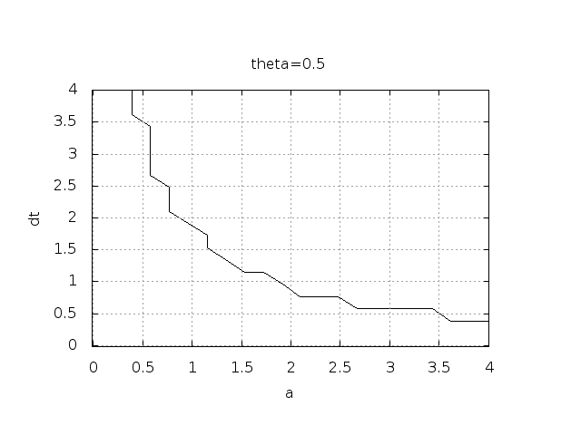

Discouraging numerical solutions. Choosing \( I=1 \), \( a=2 \), and running experiments with \( \theta =1,0.5, 0 \) for \( \Delta t=1.25, 0.75, 0.5, 0.1 \), gives the results in Figures 9, 10, and 11.


The characteristics of the displayed curves can be summarized as follows:
We ask the question
Another question to be raised is
The \( B \) function is defined at discrete \( a \) and \( \Delta t \) values.
Say we have given \( P \) $a$ values, \( a_0,\ldots,a_{P-1} \), and
\( Q \) $\Delta t$ values, \( \Delta t_0,\ldots,\Delta t_{Q-1} \).
These \( a_i \) and \( \Delta t_j \) values, \( i=0,\ldots,P-1 \),
\( j=0,\ldots,Q-1 \), form a rectangular mesh of \( P\times Q \) points
in the plane. At each point \( (a_i, \Delta t_j) \), we associate
the corresponding value of \( B(a_i,\Delta t_j) \), denoted \( B_{ij} \).
The \( B_{ij} \) values are naturally stored in a two-dimensional
array. We can thereafter create a plot of the
contour line \( B_{ij}=0.5 \) dividing the oscillatory and monotone
regions. The file decay_osc_regions.py osc_regions stands for "oscillatory regions") contains all nuts and
bolts to produce the \( B=0.5 \) line in Figures 12
and 13. The oscillatory region is above this line.
from decay_mod import solver
import numpy as np
import scitools.std as st
def non_physical_behavior(I, a, T, dt, theta):
"""
Given lists/arrays a and dt, and numbers I, dt, and theta,
make a two-dimensional contour line B=0.5, where B=1>0.5
means oscillatory (unstable) solution, and B=0<0.5 means
monotone solution of u'=-au.
"""
a = np.asarray(a); dt = np.asarray(dt) # must be arrays
B = np.zeros((len(a), len(dt))) # results
for i in range(len(a)):
for j in range(len(dt)):
u, t = solver(I, a[i], T, dt[j], theta)
# Does u have the right monotone decay properties?
correct_qualitative_behavior = True
for n in range(1, len(u)):
if u[n] > u[n-1]: # Not decaying?
correct_qualitative_behavior = False
break # Jump out of loop
B[i,j] = float(correct_qualitative_behavior)
a_, dt_ = st.ndgrid(a, dt) # make mesh of a and dt values
st.contour(a_, dt_, B, 1)
st.grid('on')
st.title('theta=%g' % theta)
st.xlabel('a'); st.ylabel('dt')
st.savefig('osc_region_theta_%s.png' % theta)
st.savefig('osc_region_theta_%s.pdf' % theta)
non_physical_behavior(
I=1,
a=np.linspace(0.01, 4, 22),
dt=np.linspace(0.01, 4, 22),
T=6,
theta=0.5)
Figure 12: Forward Euler scheme: oscillatory solutions occur for points above the curve.

Figure 13: Crank-Nicolson scheme: oscillatory solutions occur for points above the curve.

By looking at the curves in the figures one may guess that \( a\Delta t \) must be less than a critical limit to avoid the undesired oscillations. This limit seems to be about 2 for Crank-Nicolson and 1 for Forward Euler. We shall now establish a precise mathematical analysis of the discrete model that can explain the observations in our numerical experiments.
Difference equations where all terms are linear in \( u^{n+1} \), \( u^n \), and maybe \( u^{n-1} \), \( u^{n-2} \), etc., are called homogeneous, linear difference equations, and their solutions are generally of the form \( u^n=A^n \). Inserting this expression and dividing by \( A^{n+1} \) gives a polynomial equation in \( A \). In the present case we get $$ A = \frac{1 - (1-\theta) a\Delta t}{1 + \theta a\Delta t}\tp $$ This is a solution technique of wider applicability than repeated use of the recursion (40).
Regardless of the solution approach, we have obtained a formula for \( u^n \). This formula can explain everything what we see in the figures above, but it also gives us a more general insight into accuracy and stability properties of the three schemes.
The Backward Euler scheme is always stable since \( A<0 \) is impossible for \( \theta=1 \), while non-oscillating solutions for Forward Euler and Crank-Nicolson demand \( \Delta t\leq 1/a \) and \( \Delta t\leq 2/a \), respectively. The relation between \( \Delta t \) and \( a \) look reasonable: a larger \( a \) means faster decay and hence a need for smaller time steps.
Looking at Figure 11, we see that with \( a\Delta t= 2\cdot 1.25=2.5 \), \( A=-1.5 \), and the solution \( u^n=(-1.5)^n \) oscillates and grows. With \( a\Delta t = 2\cdot 0.75=1.5 \), \( A=-0.5 \), \( u^n=(-0.5)^n \) decays but oscillates. The peculiar case \( \Delta t = 0.5 \), where the Forward Euler scheme produces a solution that is stuck on the \( t \) axis, corresponds to \( A=0 \) and therefore \( u^0=I=1 \) and \( u^n=0 \) for \( n\geq 1 \). The decaying oscillations in the Crank-Nicolson scheme for \( \Delta t=1.25 \) are easily explained by the fact that \( A\approx -0.11<0 \).
The factor \( A \) is called the amplification factor since the solution at a new time level is \( A \) times the solution at the previous time level. For a decay process, we must obviously have \( |A|\leq 1 \), which is fulfilled for all \( \Delta t \) if \( \theta \geq 1/2 \). Arbitrarily large values of \( u \) can be generated when \( |A|>1 \) and \( n \) is large enough. The numerical solution is in such cases totally irrelevant to an ODE modeling decay processes! To avoid this situation, we must for \( \theta < 1/2 \) have $$ \begin{equation} \Delta t \leq \frac{2}{(1-2\theta)a}, \end{equation} $$ which means \( \Delta t < 2/a \) for the Forward Euler scheme.
We may summarize the stability investigations as follows:
We realize that the exact and numerical amplification factors depend on \( a \) and \( \Delta t \) through the product \( a\Delta t \). Therefore, it is convenient to introduce a symbol for this product, \( p=a\Delta t \), and view \( A \) and \( \Aex \) as functions of \( p \). Figure 14 shows these functions. Crank-Nicolson is clearly closest to the exact amplification factor, but that method has the unfortunate oscillatory behavior when \( p>2 \).

Calculating the Taylor series for \( \Aex \) is easily done by hand, but
the three versions of \( A \) for \( \theta=0,1,{\half} \) lead to more
cumbersome calculations.
Nowadays, analytical computations can benefit greatly by
symbolic computer algebra software. The Python package sympy
represents a powerful computer algebra system, not yet as sophisticated as
the famous Maple and Mathematica systems, but free and
very easy to integrate with our numerical computations in Python.
When using sympy, it is convenient to enter the interactive Python
mode where we can write expressions and statements and immediately see
the results. Here is a simple example. We strongly recommend to use
isympy (or ipython) for such interactive sessions.
Let us illustrate sympy with a standard Python shell syntax
(>>> prompt) to compute a Taylor polynomial approximation to \( e^{-p} \):
>>> from sympy import *
>>> # Create p as a mathematical symbol with name 'p'
>>> p = Symbol('p')
>>> # Create a mathematical expression with p
>>> A_e = exp(-p)
>>>
>>> # Find the first 6 terms of the Taylor series of A_e
>>> A_e.series(p, 0, 6)
1 + (1/2)*p**2 - p - 1/6*p**3 - 1/120*p**5 + (1/24)*p**4 + O(p**6)
Lines with >>> represent input lines and lines without
this prompt represents the result of computations (note that
isympy and ipython apply other prompts, but in this text
we always apply >>> for interactive Python computing).
Apart from the order of the powers, the computed formula is easily
recognized as the beginning of the Taylor series for \( e^{-p} \).
Let us define the numerical amplification factor where \( p \) and \( \theta \) enter the formula as symbols:
>>> theta = Symbol('theta')
>>> A = (1-(1-theta)*p)/(1+theta*p)
To work with the factor for the Backward Euler scheme we
can substitute the value 1 for theta:
>>> A.subs(theta, 1)
1/(1 + p)
Similarly, we can replace theta by 1/2 for Crank-Nicolson,
preferably using an exact rational representation of 1/2 in sympy:
>>> half = Rational(1,2)
>>> A.subs(theta, half)
1/(1 + (1/2)*p)*(1 - 1/2*p)
The Taylor series of the amplification factor for the Crank-Nicolson scheme can be computed as
>>> A.subs(theta, half).series(p, 0, 4)
1 + (1/2)*p**2 - p - 1/4*p**3 + O(p**4)
We are now in a position to compare Taylor series:
>>> FE = A_e.series(p, 0, 4) - A.subs(theta, 0).series(p, 0, 4)
>>> BE = A_e.series(p, 0, 4) - A.subs(theta, 1).series(p, 0, 4)
>>> CN = A_e.series(p, 0, 4) - A.subs(theta, half).series(p, 0, 4 )
>>> FE
(1/2)*p**2 - 1/6*p**3 + O(p**4)
>>> BE
-1/2*p**2 + (5/6)*p**3 + O(p**4)
>>> CN
(1/12)*p**3 + O(p**4)
From these expressions we see that the error \( A-\Aex\sim \Oof{p^2} \) for the Forward and Backward Euler schemes, while \( A-\Aex\sim \Oof{p^3} \) for the Crank-Nicolson scheme. It is the leading order term, i.e., the term of the lowest order (polynomial degree), that is of interest, because as \( p\rightarrow 0 \), this term is (much) bigger than the higher-order terms (think of \( p=0.01 \): \( p \) is a hundred times larger than \( p^2 \)).
Now, \( a \) is a given parameter in the problem, while \( \Delta t \) is what we can vary. One therefore usually writes the error expressions in terms \( \Delta t \). When then have $$ \begin{equation} A-\Aex = \left\lbrace\begin{array}{ll} \Oof{\Delta t^2}, & \hbox{Forward and Backward Euler},\\ \Oof{\Delta t^3}, & \hbox{Crank-Nicolson} \end{array}\right. \end{equation} $$
We say that the Crank-Nicolson scheme has an error in the amplification factor of order \( \Delta t^3 \), while the two other schemes are of order \( \Delta t^2 \) in the same quantity. What is the significance of the order expression? If we halve \( \Delta t \), the error in amplification factor at a time level will be reduced by a factor of 4 in the Forward and Backward Euler schemes, and by a factor of 8 in the Crank-Nicolson scheme. That is, as we reduce \( \Delta t \) to obtain more accurate results, the Crank-Nicolson scheme reduces the error more efficiently than the other schemes.
>>> FE = 1 - (A.subs(theta, 0)/A_e).series(p, 0, 4)
>>> BE = 1 - (A.subs(theta, 1)/A_e).series(p, 0, 4)
>>> CN = 1 - (A.subs(theta, half)/A_e).series(p, 0, 4)
>>> FE
(1/2)*p**2 + (1/3)*p**3 + O(p**4)
>>> BE
-1/2*p**2 + (1/3)*p**3 + O(p**4)
>>> CN
(1/12)*p**3 + O(p**4)
The leading-order terms have the same powers as in the analysis of \( A-\Aex \).
>>> n = Symbol('n')
>>> u_e = exp(-p*n)
>>> u_n = A**n
>>> FE = u_e.series(p, 0, 4) - u_n.subs(theta, 0).series(p, 0, 4)
>>> BE = u_e.series(p, 0, 4) - u_n.subs(theta, 1).series(p, 0, 4)
>>> CN = u_e.series(p, 0, 4) - u_n.subs(theta, half).series(p, 0, 4)
>>> FE
(1/2)*n*p**2 - 1/2*n**2*p**3 + (1/3)*n*p**3 + O(p**4)
>>> BE
(1/2)*n**2*p**3 - 1/2*n*p**2 + (1/3)*n*p**3 + O(p**4)
>>> CN
(1/12)*n*p**3 + O(p**4)
For a fixed time \( t \), the parameter \( n \) in these expressions increases as \( p\rightarrow 0 \) since \( t=n\Delta t =\mbox{const} \) and hence \( n \) must increase like \( \Delta t^{-1} \). With \( n \) substituted by \( t/\Delta t \) in the leading-order error terms, these become \( \half na^2\Delta t^2 = {\half}ta^2\Delta t \) for the Forward and Backward Euler scheme, and \( \frac{1}{12}na^3\Delta t^3 = \frac{1}{12}ta^3\Delta t^2 \) for the Crank-Nicolson scheme. The global error is therefore of second order (in \( \Delta t \)) for the latter scheme and of first order for the former schemes.
When the global error \( e^n\rightarrow 0 \) as \( \Delta t\rightarrow 0 \), we say that the scheme is convergent. It means that the numerical solution approaches the exact solution as the mesh is refined, and this is a much desired property of a numerical method.
sympy and performing symbolic integration. For
the Forward Euler scheme we have
p, n, a, dt, t, T, theta = symbols('p n a dt t T 'theta')
A = (1-(1-theta)*p)/(1+theta*p)
u_e = exp(-p*n)
u_n = A**n
error = u_e.series(p, 0, 4) - u_n.subs(theta, 0).series(p, 0, 4)
# Introduce t and dt instead of n and p
error = error.subs('n', 't/dt').subs(p, 'a*dt')
error = error.as_leading_term(dt) # study only the first term
print error
error_L2 = sqrt(integrate(error**2, (t, 0, T)))
print error_L2
The output reads
sqrt(30)*sqrt(T**3*a**4*dt**2*(6*T**2*a**2 - 15*T*a + 10))/60
which means that the \( L^2 \) error behaves like \( a^2\Delta t \).
Strictly speaking, the numerical error is only defined at the mesh points so it makes most sense to compute the \( \ell^2 \) error $$ ||e^n||_{\ell^2} = \sqrt{\Delta t\sum_{n=0}^{N_t} ({\uex}(t_n) - u^n)^2} \tp $$ We have obtained an exact analytical expressions for the error at \( t=t_n \), but here we use the leading-order error term only since we are mostly interested in how the error behaves as a polynomial in \( \Delta t \), and then the leading order term will dominate. For the Forward Euler scheme, \( \uex(t_n) - u^n \approx {\half}np^2 \), and we have $$ ||e^n||_{\ell^2}^2 = \Delta t\sum_{n=0}^{N_t} \frac{1}{4}n^2p^4 =\Delta t\frac{1}{4}p^4 \sum_{n=0}^{N_t} n^2\tp$$ Now, \( \sum_{n=0}^{N_t} n^2\approx \frac{1}{3}N_t^3 \). Using this approximation, setting \( N_t =T/\Delta t \), and taking the square root gives the expression $$ ||e^n||_{\ell^2} = \half\sqrt{\frac{T^3}{3}} a^2\Delta t\tp$$ Calculations for the Backward Euler scheme are very similar and provide the same result, while the Crank-Nicolson scheme leads to $$ ||e^n||_{\ell^2} = \frac{1}{12}\sqrt{\frac{T^3}{3}}a^3\Delta t^2\tp$$
Both the point-wise and the time-integrated true errors are of second order in \( \Delta t \) for the Crank-Nicolson scheme and of first order in \( \Delta t \) for the Forward Euler and Backward Euler schemes.
Let us illustrate the calculation of the truncation error for the Forward Euler scheme. We start with the difference equation on operator form, $$ \lbrack D_t u = -au\rbrack^n,$$ i.e., $$ \frac{u^{n+1}-u^n}{\Delta t} = -au^n\tp$$ The idea is to see how well the exact solution \( \uex(t) \) fulfills this equation. Since \( \uex(t) \) in general will not obey the discrete equation, error in the discrete equation, called a residual, denoted here by \( R^n \): $$ \begin{equation} R^n = \frac{\uex(t_{n+1})-\uex(t_n)}{\Delta t} + a\uex(t_n) \tp \tag{43} \end{equation} $$ The residual is defined at each mesh point and is therefore a mesh function with a superscript \( n \).
The interesting feature of \( R^n \) is to see how it depends on the discretization parameter \( \Delta t \). The tool for reaching this goal is to Taylor expand \( \uex \) around the point where the difference equation is supposed to hold, here \( t=t_n \). We have that $$ \uex(t_{n+1}) = \uex(t_n) + \uex'(t_n)\Delta t + \half\uex''(t_n) \Delta t^2 + \cdots $$ Inserting this Taylor series in (43) gives $$ R^n = \uex'(t_n) + \half\uex''(t_n)\Delta t + \ldots + a\uex(t_n)\tp$$ Now, \( \uex \) fulfills the ODE \( \uex'=-a\uex \) such that the first and last term cancels and we have $$ R^n \approx \half\uex''(t_n)\Delta t \tp $$ This \( R^n \) is the truncation error, which for the Forward Euler is seen to be of first order in \( \Delta t \).
The above procedure can be repeated for the Backward Euler and the Crank-Nicolson schemes. We start with the scheme in operator notation, write it out in detail, Taylor expand \( \uex \) around the point \( \tilde t \) at which the difference equation is defined, collect terms that correspond to the ODE (here \( \uex' + a\uex \)), and identify the remaining terms as the residual \( R \), which is the truncation error. The Backward Euler scheme leads to $$ R^n \approx -\half\uex''(t_n)\Delta t, $$ while the Crank-Nicolson scheme gives $$ R^{n+\half} \approx \frac{1}{24}\uex'''(t_{n+\half})\Delta t^2\tp$$
The order \( r \) of a finite difference scheme is often defined through the leading term \( \Delta t^r \) in the truncation error. The above expressions point out that the Forward and Backward Euler schemes are of first order, while Crank-Nicolson is of second order. We have looked at other error measures in other sections, like the error in amplification factor and the error \( e^n=\uex(t_n)-u^n \), and expressed these error measures in terms of \( \Delta t \) to see the order of the method. Normally, calculating the truncation error is more straightforward than deriving the expressions for other error measures and therefore the easiest way to establish the order of a scheme.
Consistency means that the error in the difference equation, measured through the truncation error, goes to zero as \( \Delta t\rightarrow 0 \). Since the truncation error tells how well the exact solution fulfills the difference equation, and the exact solution fulfills the differential equation, consistency ensures that the difference equation approaches the differential equation in the limit. The expressions for the truncation errors in the previous section are all proportional to \( \Delta t \) or \( \Delta t^2 \), hence they vanish as \( \Delta t\rightarrow 0 \), and all the schemes are consistent. Lack of consistency implies that we actually solve a different differential equation in the limit \( \Delta t\rightarrow 0 \) than we aim at.
Stability means that the numerical solution exhibits the same qualitative properties as the exact solution. This is obviously a feature we want the numerical solution to have. In the present exponential decay model, the exact solution is monotone and decaying. An increasing numerical solution is not in accordance with the decaying nature of the exact solution and hence unstable. We can also say that an oscillating numerical solution lacks the property of monotonicity of the exact solution and is also unstable. We have seen that the Backward Euler scheme always leads to monotone and decaying solutions, regardless of \( \Delta t \), and is hence stable. The Forward Euler scheme can lead to increasing solutions and oscillating solutions if \( \Delta t \) is too large and is therefore unstable unless \( \Delta t \) is sufficiently small. The Crank-Nicolson can never lead to increasing solutions and has no problem to fulfill that stability property, but it can produce oscillating solutions and is unstable in that sense, unless \( \Delta t \) is sufficiently small.
Convergence implies that the global (true) error mesh function \( e^n = \uex(t_n)-u^n\rightarrow 0 \) as \( \Delta t\rightarrow 0 \). This is really what we want: the numerical solution gets as close to the exact solution as we request by having a sufficiently fine mesh.
Convergence is hard to establish theoretically, except in quite simple problems like the present one. Stability and consistency are much easier to calculate. A major breakthrough in the understanding of numerical methods for differential equations came in 1956 when Lax and Richtmeyer established equivalence between convergence on one hand and consistency and stability on the other (the Lax equivalence theorem). In practice it meant that one can first establish that a method is stable and consistent, and then it is automatically convergent (which is much harder to establish). The result holds for linear problems only, and in the world of nonlinear differential equations the relations between consistency, stability, and convergence are much more complicated.
We have seen in the previous analysis that the Forward Euler, Backward Euler, and Crank-Nicolson schemes are convergent (\( e^n\rightarrow 0 \)), that they are consistent (\( R^n\rightarrow 0 \), and that they are stable under certain conditions on the size of \( \Delta t \). We have also derived explicit mathematical expressions for \( e^n \), the truncation error, and the stability criteria.
from numpy import logspace, exp
from matplotlib.pyplot import plot, semilogx
p = logspace(-6, -0.5, 101)
y = (1-exp(-p))/p
semilogx(p, y)
Illustrate such errors for the finite difference operators \( [D_t^+u]^n \) (forward), \( [D_t^-u]^n \) (backward), and \( [D_t u]^n \) (centered) in the same plot.
Perform a Taylor series expansions of the error fractions and find the leading order \( r \) in the expressions of type \( 1 + Cp^r + \Oof{p^{r+1}} \), where \( C \) is some constant.
Hint.
To save manual calculations and learn more about symbolic computing,
make functions for the three difference operators and use sympy
to perform the symbolic differences, differentiation, and Taylor series
expansion. To plot a symbolic expression E against p, convert the
expression to a Python function first: E = sympy.lamdify([p], E).
Filename: decay_plot_fd_error.py.
a) Set \( a=-1 \) and run experiments with \( \theta=0, 0.5, 1 \) for various values of \( \Delta t \) to uncover numerical artifacts. Recall that the exact solution is a monotone, growing function when \( a<0 \). Oscillations or significantly wrong growth are signs of wrong qualitative behavior.
From the experiments, select four values of \( \Delta t \) that
demonstrate the kind of numerical solutions that are characteristic
for this model.
Filename: growth_demo.py.
b) Write up the amplification factor and plot it for \( \theta=0,0.5,1 \) together with the exact one for \( a\Delta t <0 \). Use the plot to explain the observations made in the experiments.
Hint. Modify the decay_ampf_plot.py code.
Filename: growth_ampf_plot.py.